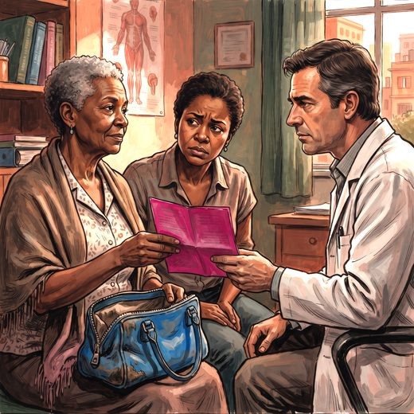

Consulta rápida à beira do leito
Condutas, doses e interações.
Referências da aula · 3
- American Psychiatric Association. Diagnostic and statistical manual of mental disorders: DSM-5-TR. 5th ed., text revision. Washington, DC: American Psychiatric Association; 2022.
- American Psychiatric Association. DSM-5-TR neurocognitive disorders supplement: coding and text updates. Washington, DC: American Psychiatric Association Publishing; 2022.
- Serrano-Pozo A, Escott-Price V, Grinberg LT, et al. Alzheimer’s disease. Lancet. 2026;407:2241-62. PMID 42208565. doi:10.1016/S0140-6736(26)00198-4.PubMedDOI